Projects
Introduction to Projects
osFinancials5/TurboCASH5 provides support for projects, allowing you to effectively track and manage financial activities and expenses associated with specific projects within your organization.
With osFinancials' project functionality, you can create and define individual projects, assign relevant financial transactions and expenses to each project, and track the financial performance and progress of each one.
This feature enables you to accurately allocate costs, track project-related expenses, and monitor the profitability of each project or job. You can easily generate reports and statements that provide detailed insights into the financial status, budget utilization, and overall performance of your projects or jobs.
By utilizing osFinancials' project capabilities, you can make informed decisions, effectively manage resources, and ensure that your projects are on track financially. This functionality is particularly beneficial for organizations that engage in project-based work, such as construction companies, consulting firms, or any business that needs to track and manage financial activities at a project level.
With osFinancials' support for projects or job costing, you can enhance your financial management processes and gain better visibility into the financial aspects of your organization's projects.
Key features:
- You may create Reporting groups for Projects. These Projects may be activated in batches and documents.
- You may select to process batch transactions and generate sales documents (i.e. Quotes, Invoices and Credit notes) as well as purchase documents (i.e. Orders, Purchases and Supplier returns) for projects.
- You may use the Calendar / Planner to schedule events (appointments) create quotes for hours and convert them to invoices. You may schedule events (appointments) for creditors (suppliers / vendors) as well as up to six (6) categories of appointments with your debtors (customers / clients).
|
|
The Bulk time entries feature in the Calendar may be used to schedule and process documents for a selected Project |

|
|
To check and illustrate the use of Projects in osFinancials5/TurboCASH5, the figures and transactions are based on the following Sets of Books ".../bin/Tutorials/PROJECTS:
|
Activate Projects
You need to activate the projects in the Setup → System parameters menu (Setup ribbon).
To activate projects:
- Click on the Setup → System parameters (Setup ribbon).
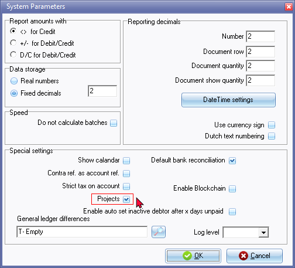
- Select (tick) the “Projects” option in the “Special settings” section of the screen.
- Click OK to save your changes.
- Close the Set of Books and re-open the Set of Books (Start ribbon) again. Projects (Default ribbon) will be activated.
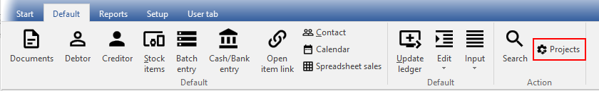
- The next step is to add your projects to the Project group.
Create Projects
You need to create Reporting groups for Projects. These Projects may be activated in documents and/or specific batches and documents.
Examples of Project Groups
Some examples of reporting groups for projects:
- Project types: You can create reporting groups based on different types of projects your organization undertakes. For example, you can have reporting groups for Research and Development (R&D) projects, Marketing campaigns, Infrastructure projects, or Client-specific projects. This allows you to track and analyse expenses, revenue, and performance for each project type separately.
- Project phases: If your projects go through different phases, you can create reporting groups based on these phases. For example, you can have reporting groups for Project Planning, Design, Implementation, Testing, and Completion. This helps in monitoring the progress and expenses incurred during each phase of the project.
- Project locations: If your projects are carried out in different geographical locations, you can create reporting groups based on these locations. For example, you can have reporting groups for Local projects, National projects, or International projects. This enables you to analyse the performance and expenses associated with projects in each location.
- Key clients: If you have significant clients or customers for whom you undertake projects, you can create reporting groups based on these key clients. This allows you to track the performance and profitability of projects associated with each client separately.
- Project managers: If you have multiple project managers overseeing different projects, you can create reporting groups based on these project managers. This helps in monitoring the performance, resource allocation, and profitability of projects managed by each individual.
These examples illustrate how reporting groups for projects in osFinancials5/TurboCASH5 can be used to categorize and analyse project-related data. By assigning projects to appropriate groups, you can track expenses, revenue, resource utilization, and profitability for each project category. This information can assist in project management, decision-making, and resource allocation within your organization.
Create Project Groups
Once the batches and/or documents are posted (updated to the ledger), you may generate various reports for each Project on the “Sidebar” of Projects (Default ribbon).
To create Project groups:
- Click on Setup → Groups (Setup ribbon).
- Click Projects.
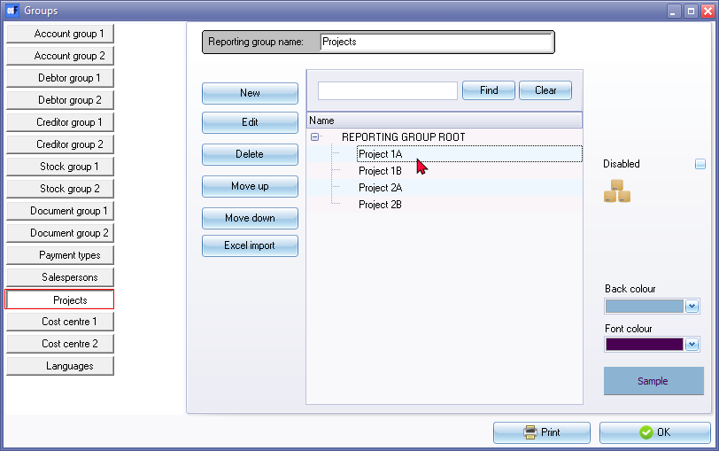
|
|
If you have created a Set of Books from scratch (using the "Create Set of Books (Advanced)" option for Firebird database types or the "Create Set of Books (Advanced)" option for MSSQL database types), the Project group will not be available. You need to manually add the Project group to the TYPES table See topics in this Help file : -
|

- To add a new Project to the root directory or list, select the “REPORTING GROUP ROOT” on the list and click on the New button.
- Enter the name of your Project (e.g. “Project 1A”) and click on “REPORTING GROUP ROOT” again.
- Repeat the process until you have entered all the Projects.
- Click on the OK button to save your changes and close the “Groups” screen.
|
|
You may click on the Print button to print a list of your Projects. |
|
|
You may set the background and font colours for your projects, if necessary. In addition to this, you may create and set colours for up to 2 reporting groups for “Stock group 1”, “Stock group 2” and/or “Document group 1”, “ Document group 2”. |
The next step is to create your projects and link the projects to the Project groups.
Create / Add New Projects
Add new projects
To create a project:
- Click on Projects (Default ribbon). The “Projects” screen (list view) is displayed:
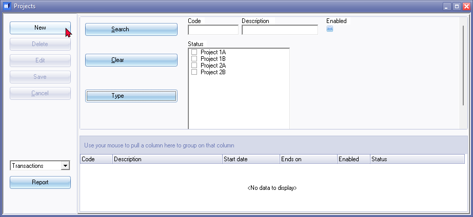
- Click on the New button. A new “Project code” 8-digit numerical code, e.g. (“00000001”) will automatically generated. The “Projects” screen will change as follows:
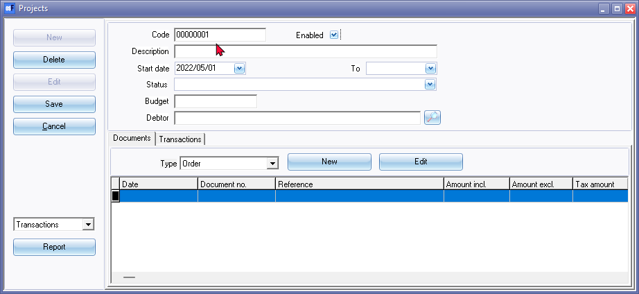
- Enter or select the following:
- Code – This code is automatically generated. When clicking on the New button, it will automatically generate the next Project code.
|
|
You may overtype the Project code with your own code. This code may be alpha numerical. Up to 8 characters is recommended. |
- Enabled – This is by default selected (ticked).
|
|
You will not be allowed to close a project (remove the tick in the “Enabled” field) and click on the Save button, if there are any unposted documents. |
- Description – Enter the name or a description for the Project.
- Start date – Enter or select a date on which the Project commences.
- To – Enter or select a date on which the Project ends (should be completed).
- Status – Select a Project from the list (added / created in Projects (Groups on the Setup ribbon).
- Budget – Enter the budget (estimated project cost) for the Project.
|
|
Budget figures for projects may also be added for selected accounts in Accounts (Setup ribbon). |
- Debtor – Select a default debtor (customer / client) account.
|
|
If the default debtor (customer / client) account is selected, the Project Quote tab will be added. |
|
|
You may need to add a default debtor (customer / client) account in Debtor (Default ribbon). |
- Click on the Save button to save the record (Project). The Project will be added to the list.
|
|
If the default debtor (customer / client) account is selected, purchase documents (Purchases, Supplier returns and Orders) and sales documents (Invoices, Credit notes and Quotes) for the Project can only be processed for the default debtor (customer / client) account. |
|
|
To remove a selected default debtor (customer / client) account, click on the Lookup icon on the “Debtor” field and enter a space and close the Lookup screen. The default debtor (customer / client) account as well as the Project Quote tab will be removed. |
Project Screens Overview
Project list screen
This screen will list all projects created with the New button and as edited with the Edit button will be listed.
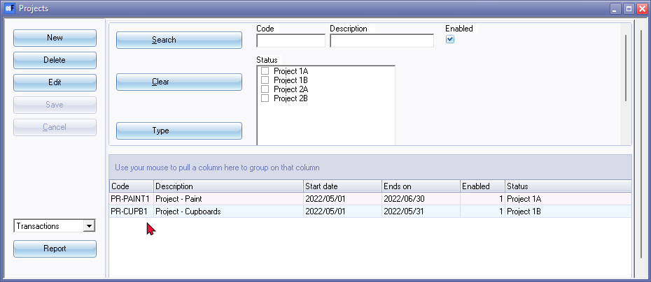
The details of this screen, is as follows:
- Sidebar
- New – Add or create a new project.
- Delete – Delete a selected project.
- Edit – Edit a selected project.
- Save – Save changes to selected project.
- Cancel – Aborts any changes without saving any edited / changed details of a selected project
- Reports – Select and print the following reports:
- Transactions – Prints the transactions of documents and batches which is posted (updated) to the ledger.
- Hours – Prints the Hours report for documents created / edited for the Hours event and Invoices created for debtor (customer / client) appointments.
- Stock items – Prints the details of each stock item
- Statements – Prints the statement of the project.
- Totals – Prints the summary of the project totals
- Search / Filter – Search for a project by project code or project description. You may also filter by selecting specific project groups.
- Columns – List the projects.
- Code – Project code
- Description – Project description
- Start date – The date entered or selected on which the project commenced.
- Ends on – The end date entered or selected on which the project will / should be completed.
- Enabled – “1” = Enabled and ”0” = Disabled.
- Status – This is the selected group as added on the “Projects” option (Groups on the Setup ribbon).
Selected Project screen
The selected project screen allows you to edit a project details and to manage a selected project on the Documents, Transactions and Project Quotes tabs.
Documents tab
The Documents tab, lists all the document types; i.e. purchase documents (Purchases, Supplier returns and Orders) as well as sales documents (Invoices, Credit notes and Quotes) which are processed for the selected Project.
The documents on this list include posted as well as unposted documents.
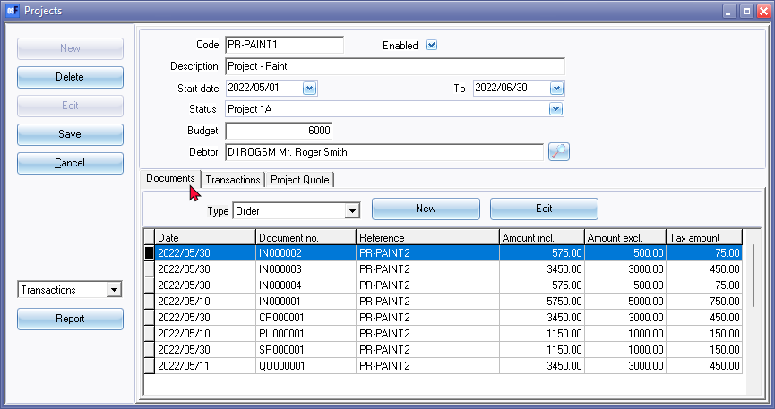
The options, is as follows:
- Type – Select a purchase document (Purchase, Supplier return or Order) or a sales document (Invoice, Credit note or Quote).
- New – Create a new document for the selected document type.
- Edit – Opens the selected document on the list in the “Document entry” screen.
- Unposted document – You may edit the document, if necessary.
- Posted document – This document cannot be edited.
|
|
The “Reference” column displays the reference as added in the “Your reference” field in the Document header. |
Transactions tab
Only the transactions in documents and/or batches, which are posted (updated) to the ledger, will be listed.
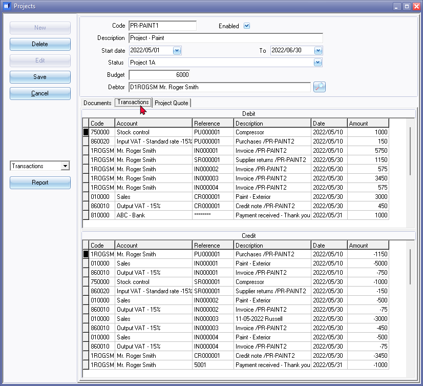
|
|
These posted (updated) transactions will be included in the “Transactions” report. |
The transactions will be listed in the “Debit” or “Credit” sections. A brief summary of the transactions in the “Debit” or “Credit” sections, is as follows:
- Debit – Invoices and Supplier return documents will be listed for the Debtor or Creditor account. The contra accounts (e.g. Sales and Stock control and Tax accounts) will be listed in the “Credit” credit section.
- Credit – Credit notes and Purchase documents will be listed for the Debtor or Creditor account. The contra accounts (e.g. Sales and Stock control and Tax accounts) will be listed in the “Debit” credit section.
|
|
Balancing entries for posted (updated) transactions in batches, is displayed as 8 asterisks (e.g. “********”). |
Context menu
Right-click on selected transactions to access the context menu.
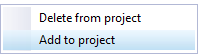
- Delete selected transaction(s) from a project.- Add selected transaction(s) to a project.
|
|
SEE - REMOVE / ADD PROJECT TRANSACTIONS |

|
|
Note if a document, e.g. “D000001” is processed in the Project Quote tab of the selected project, it is included in the “All” document types selection on the “Update ledger” screen. If you have posted (updated) the ledger using the “All” document types selection on the “Update ledger” screen, these Project Quotes may post incorrect transactions to the ledger. These “Project Quotes” will then be listed in the Transactions tab. |

Project Quote tab
|
|
SEE - PROJECT QUOTES – KNOWN ISSUES |
|
|
The Project Quote tab will only be activated, if a Debtor account is selected. |
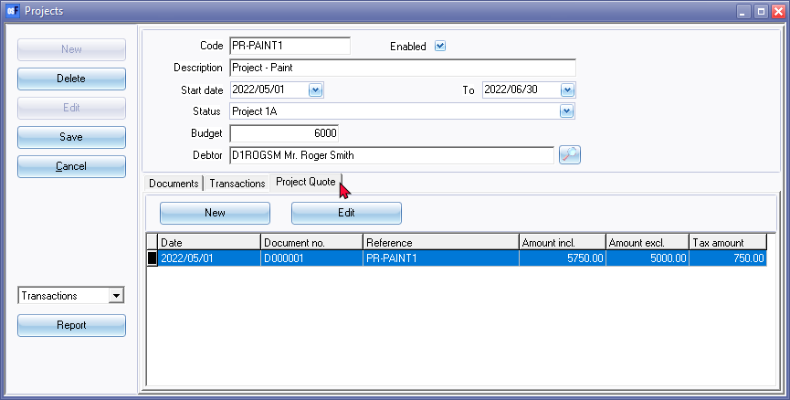
The options, is as follows:
- New – Create a new “Project Quote” for the selected document type.
- Edit – Opens the selected “Project Quote” on the list in the “Document entry” screen.
- Unposted document – You may edit the document, if necessary.
- Posted document – This document cannot be edited.
|
|
Note if a document, e.g. “D000001” is processed in the Project Quote tab of the selected project, it is included in the “All” document types selection on the “Update ledger” screen. If you have posted (updated) the ledger using the “All” document types selection on the “Update ledger” screen, these Project Quotes may post incorrect transactions to the ledger. |
|
|
The “Reference” column displays the reference as added in the “Your reference” field in the Document header. |
DOCUMENT PROCESSING FOR PROJECTS
The following options are available to process transactions in purchase documents (Purchases, Supplier returns and Orders) and sales documents (Invoices, Credit notes and Quotes) for Projects:
- Projects (Documents tab)
- Document entry
- Calendar:
- Hours event
- Create Invoices for debtor (customer / client) appointments.
|
|
Selecting Project for Documents: When processing documents from the Documents tab of a selected Project, the option to select a Project in the Document header section, is not available. The project code is automatically linked to the selected Project. 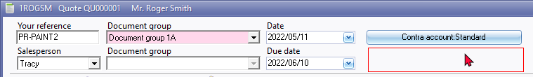 When processing documents, launched from Documents (Default ribbon), you may select a project in the Document header section. If any project is already associated with a selected document, the Project will be automatically displayed. 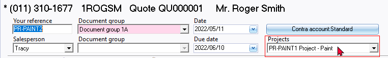 |
Create Project Quotes
You may create a quote or quotes for a project.
|
|
The Project Quote tab will only be activated, if a Debtor account is selected for the project. |
|
|
Quotes may be processed on the Documents tab of a selected project. |
|
|
Quotes may also be processed from Documents (Default ribbon). |
|
|
The “Quotes” on the Project Quote tab will not be included on the Documents tab of the selected project. |
|
|
The “Quotes” on the Project Quote tab will be included as Projects on the “Stock items” and “Statements” reports. |
To create a project quote:
- On the Default ribbon, select Projects.
- Select a project from the list.
- Click on the Project Quote tab.
|
|
The Project Quote tab will only be activated, if a Debtor account is selected. |
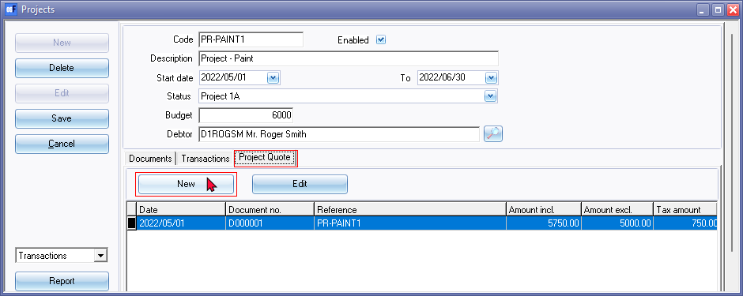
- Click on the New button.
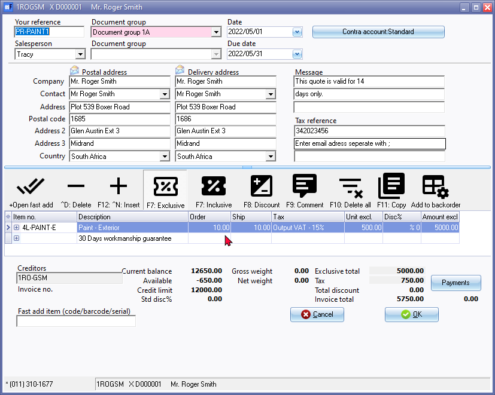
- Enter a reference in the “Your reference” field.
|
|
The reference number is added to projects and is useful when searching for a specific document or a project. |
- Check and edit the messages in the “Message” field, if necessary.
- Select the “Stock item” and check the rest of the fields.
|
|
Additional information may be added to stock items on documents:
|
- Click OK to close and save the Quote. The Quote will be added to the Project Quote tab of the selected project.
- Click on the Yes button to print the quote.
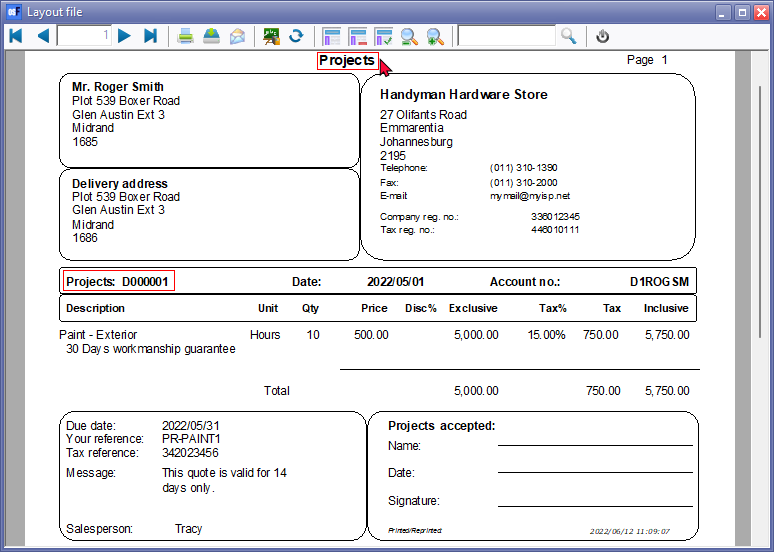
|
|
If the Project Quote is printed on the Universal layout files, for all document types, it will display “Projects” as the document name instead of “Quote”. “Projects” as the Document type will be displayed, if the Layout file on Setup → Documents setup on the (Setup ribbon) or on the “Layout file 3” field on the Delivery address tab of Debtor accounts (Default ribbon) is selected, as “Layout file”, or the following “Document layout” files is selected:
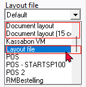 |

- After checking or editing the project quote, the “Document entry” screen will be displayed, listing the “Project Quote”.
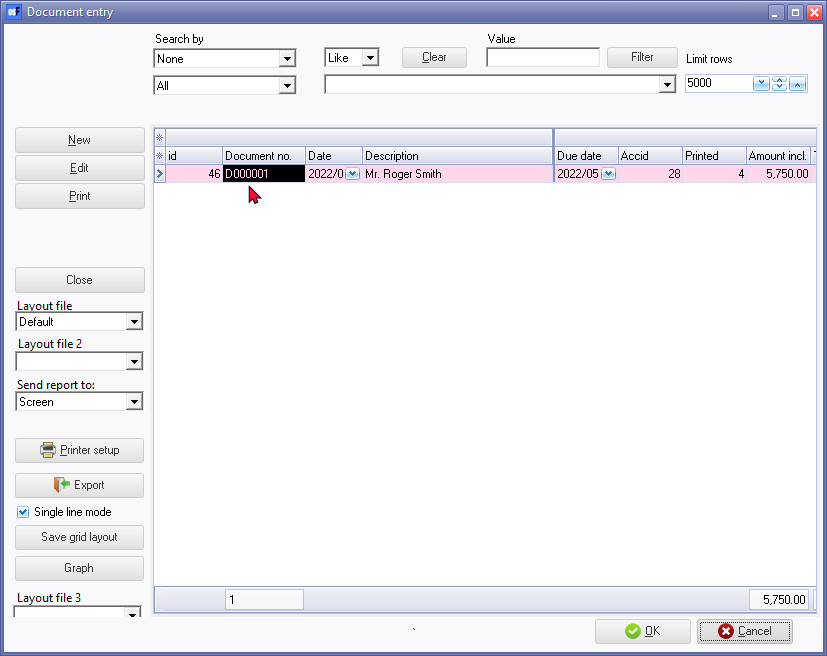
- Click on the Close button or the Cancel button to close and exit the “Document entry” screen.
|
|
These project quotes will not be listed, if the “Document entry” screen is accessed from Documents on the Default ribbon. |
|
|
The default document number for is prefixed with a “D” followed by a 6-digit numerical number; e.g. (“D000001”). The “Project Quote” document number cannot be changed. |
|
|
The default document numbers is set to begin with 000001 (prefixed by 2 alphabetical characters IN for Invoices, CR for Credit notes, PU for Purchase documents, SR for Supplier returns documents, OR for Orders and QU for Quotes). These document number pre-fixes will automatically be used in Projects if documents are processed from the Documents tab or on the Documents (Default ribbon). |
Create Documents for a Project
Once a Projects is activated and Project codes are created, all purchase documents (Purchases, Supplier returns and Orders) and sales documents (Invoices, Credit notes and Quotes) could be processed as follows:
- For a selected Project in Projects (Default ribbon)
- Any new documents may also be created (generated) in the Documents (Default ribbon). You may then select the Project code.
- If any documents have not yet been posted, you may select and process them in the normal Documents option Documents (Default ribbon). You may then edit them and select a different project.
|
|
If the default debtor (customer / client) account is selected for the Project, purchase documents (Purchases, Supplier returns and Orders) and sales documents (Invoices, Credit notes and Quotes) for the Project can only be processed for the default debtor (customer / client) account. The Debtor accounts or Creditor accounts screens will not be displayed. |
|
|
If the “No print confirmation” setting in the Stock information (Setup ribbon) is not selected (not ticked), the confirmation message "Do you wish to Print the Invoice now?" will be displayed. Click on the Yes button to print the Invoice (or on the No button not to Print the Invoice at this stage). |
To create documents for a selected project:
- On the Default ribbon, select Projects.
- Select a project from the list.
- Click on the Documents tab.
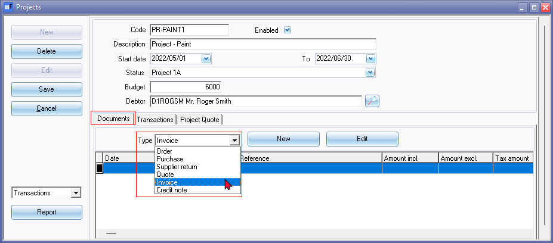
- On the “Type” field, select a purchase document (Purchase, Supplier return or Order) or sales documents (Invoice, Credit note or Quote).
- Click on the New button.
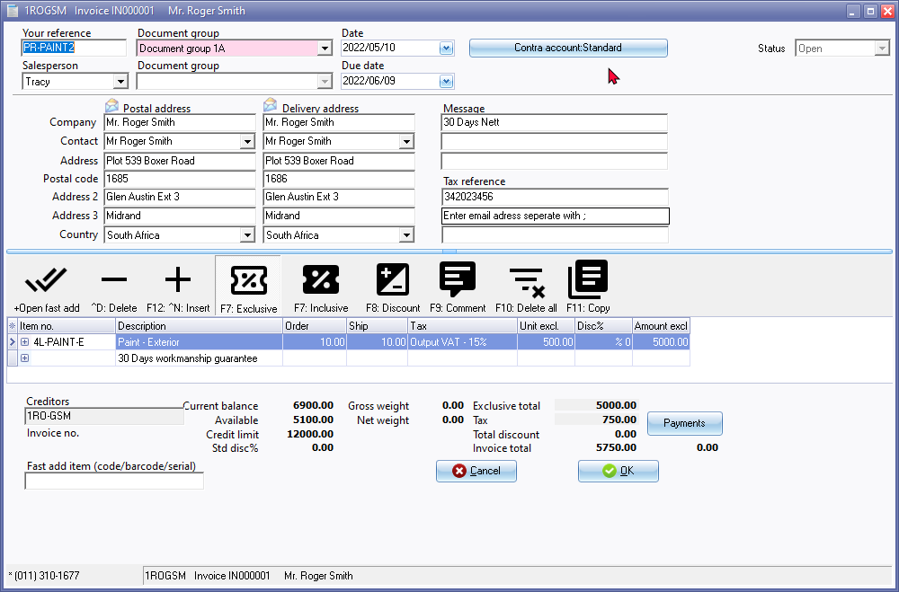
- Enter a reference in the “Your reference” field.
|
|
The reference number is added to projects and is useful when searching for a specific document or a project. |
- Check and edit the messages in the “Message” field, if necessary.
- Select the “Stock item” and check the rest of the fields.
|
|
Additional information may be added to stock items on documents:
|
- Click OK to close and save the Invoice. The Invoice will be added to the Documents tab of the selected project.
- Click on the Yes button to print the Invoice.
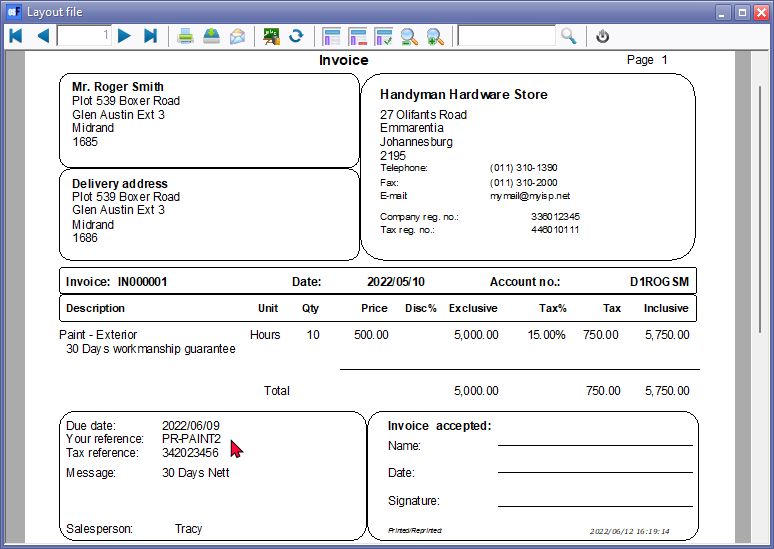
- After checking or editing the project quote, the “Document entry” screen will be displayed, listing the “Project Invoice”.
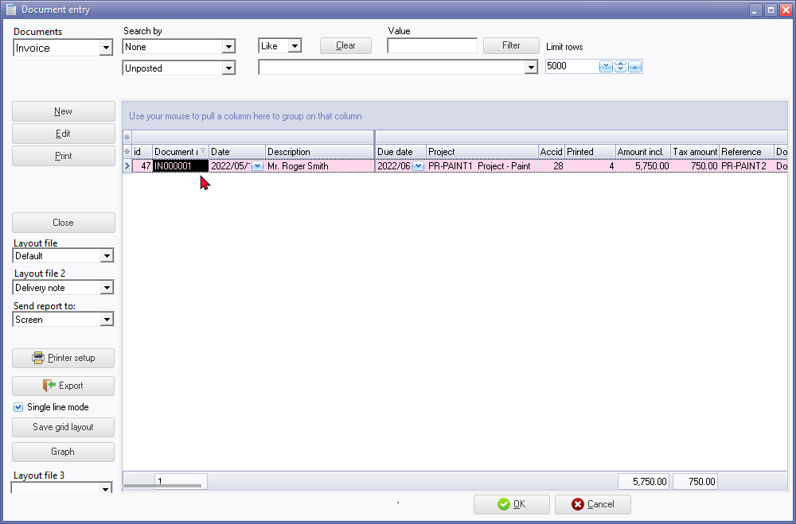
- Click on the Close button or the Cancel button to close and exit the “Document entry” screen.
Create Invoices in the Calendar for Projects
The Calendar / Planner allows you to create invoices for Projects. The following options are available:
- Hours – Create quotes for a selected debtor (customer / client) account. The quote will be added to the Documents tab of a selected Project. The quotes may be edited and converted to an Invoice.
- Create invoices for scheduled debtor (customer / client) appointments. You may create up to 6 categories of debtor (customer / client) appointments.
Once the quotes or invoices are generated, and the project is selected, these documents will be added to the Documents tab of a selected Project.
Create Invoices for Hours
Should you need to invoice a debtor (customer / client) for services rendered on an hourly basis (e.g. consulting, etc.), you may use the “Hours” category to schedule and process quotes (invoices) with a few mouse-clicks. The Calendar (Planner) is the electronic diary, time sheet, which integrates the billing of your debtors (customers / clients).
|
|
This option generates Quotes and not Invoices. The reason for this, is:
You may also view and print the Invoice on the Documents tab of the Debtor account (Debtors on the Default ribbon). Once the Invoice is posted (updated to the ledger), it will be listed as a debit transaction on the Transactions tab of the Debtor account. You may also select a specific person (salesperson) which will render these services. |
Processing Invoices for Hours
If you use the “Hours” category to schedule and process quotes, for your debtors (customers / clients), it will create quotes when you create invoices for hours. These quotes need to be confirmed and converted to an invoice.
To process invoices for hours:
- If the Calendar is not automatically displayed, click on the Calendar (Default ribbon).
- Select the day and a time slot to schedule the hours and right-click on a time slot.
- On the context menu, select the “Add Event...” option. The “Untitled – Event” screen will be displayed.
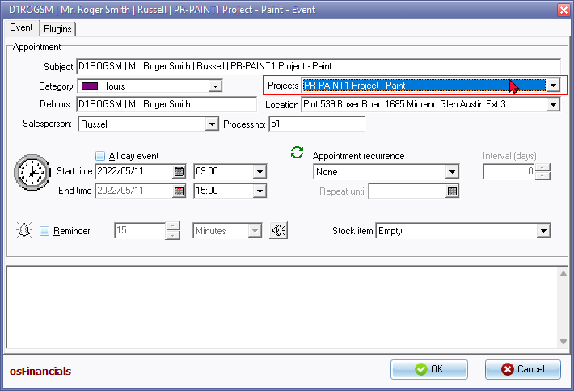
- On the “Untitled Event” screen, enter and/or select the following:
- Subject - Leave blank. This will automatically be filled in with the debtor (customer / client) account code, description and Salesperson when selecting it.
- Category - Select “Hours” (Magenta colour).
- Hours - Click on the Hours field. Select a debtor customer account.
- Projects - Empty is the default project. Select a project from the list.
- Salesperson- Select a salesperson.
- All day event - Leave blank.
- Start time - This is the date and time as selected on the Calendar from where the “Untitled - Event” screen was launched. If this date is not correct, you may select the correct date. Enter or select the time slot, if not correct.
- End time - Enter the time expected to finish the project.
- Appointment recurrence - The default is “None”. Cannot be selected for Hours.
- Repeat until - Field disabled. Cannot be selected for Hours.
- Reminder - You may activate it and set the “Minutes”, “Hours” or “Days“ to remind you in advance to process invoices for hours.
|
|
The Subject in the Titlebar will display the debtor (customer / client) account code and name, the name of the salesperson as well as the Project code and description. |
- Notes - You may enter notes below the “Reminder” section of the “Event” screen (e.g. “Paint – white exterior – 6 hours”), etc.
|
|
This additional information will be displayed in the “Notes” column on the Appointment tab for the debtor (customer / client) account (Debtor on the Default ribbon). |
- Click on the OK button to register and save the “Hours” event.
|
|
The Subject in the Titlebar will display the debtor (customer / client) account code and name, the name of the salesperson as well as the Project code and description. |
- On the Calendar topbar, click on the Create invoices for hours button.
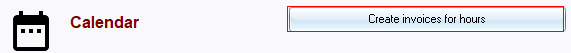
The following options screen is displayed:
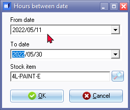
- Select the date from and date to in which the hourly rate is to be charged (e.g. 2022/05/11).
- Click on the Lookup icon and select the stock item.
- Click on the OK button to create the quote. The information screen "Quote(s) generated” will be displayed.
- Click on the OK button.
|
|
This Quote may be viewed on the following options: Document Entry screen as Unposted (i.e. Not converted to an Invoice).
You may need to edit the quote, e.g. add comments, change the hours, etc. change the Project code, before converting it to an Invoice. |
Edit / Convert Quotes to Invoices
Once quotes are generated for the “Hours” events n the “Calendar” for debtor (customer / client) accounts, you may convert these quotes to invoices.
To convert the quote for hours to invoices:
- Exit or close the Projects (if active).
- On the Default ribbon, select Documents.
- Select “Quote”.
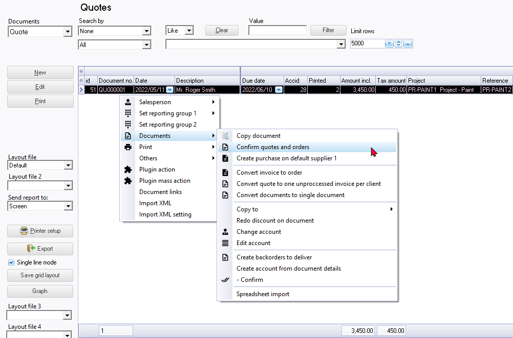
- Select the specific “Quote” and right-click. On the context menu, select Documents → Confirm quotes and orders.
- A confirmation message is displayed:
“Do you wish to: (1) Quote Confirmation”
- Click Yes. Another confirmation message “Do you wish to delete this Quote?”
- Click No.
|
|
If you click on Yes, the Quote will be removed from the “Document entry” screen as well as the Documents tab on the selected Project. |
- Another confirmation message is displayed:
“Document(s) created! IN000003 PR-PAINT2 1ROGSM Mr. Roger Smith”
- Click OK.
To edit the converted invoice for hours:
- Exit or close the Projects (if active).
- On the Default ribbon, select Projects or Documents.
- Select the “Invoice”.
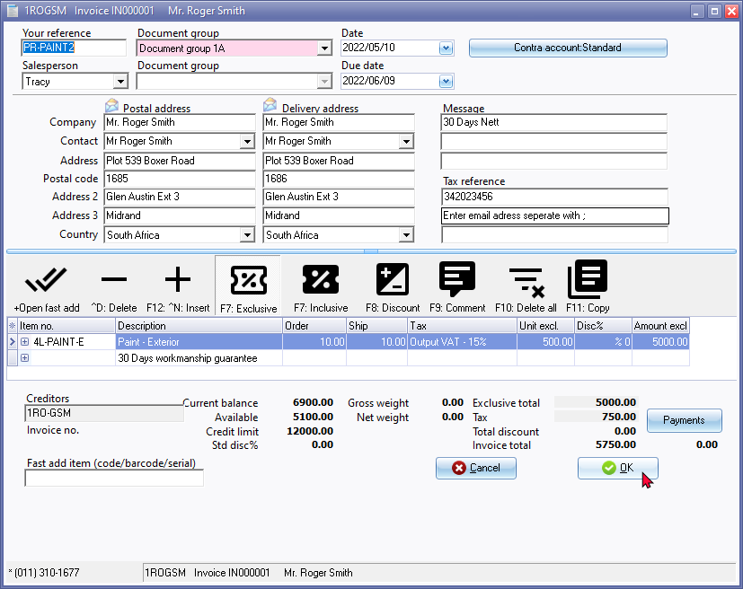
|
|
This Invoice is selected from the Documents tab on the selected Project. If the Invoice was selected from the Document entry” screen, the Project may be changed. |
- Enter a reference in the “Your reference” field.
|
|
The reference number is added to projects and is useful when searching for a specific document or a project. |
- Check and edit the messages in the “Message” field, if necessary.
- Edit the rest of the fields as necessary, if required.
- Click OK to close the Invoice.
Creating Invoices for Debtor Appointments
Once up to 6 categories of debtor (customer / client) appointments have been scheduled, you may create invoices.

Schedule Debtor Appointments
To schedule debtor appointments:
- If the Calendar is not automatically displayed, click on the Calendar (Default ribbon).
- Select the day and a time slot to schedule the debtor (customer / client) appointment and right-click on a time slot.
- On the context menu, select the “Add Event...” option. The “Untitled – Event” screen will be displayed.
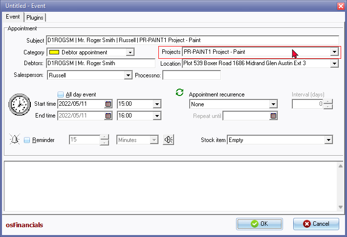
- On the “Untitled Event” screen, enter and/or select the following:
- Subject - Leave blank. This will automatically be filled in with the debtor (customer / client) account code, description and salesperson when selecting it.
- Category – Select any of the 6 categories of Debtor appointments.
- Hours - Click on the Hours field. Select a debtor customer account.
- Projects - Empty is the default project. Select a Project from the list.
- Salesperson- Select a salesperson.
- All day event - Leave blank.
- Start time - This is the date and time as selected on the Calendar from where the “Untitled - Event” screen was launched. If this date is not correct, you may select the correct date. Enter or select the time slot, if not correct.
- End time - Enter the time expected to finish the project.
- Appointment recurrence - The default is "None".
- Repeat until - Field disabled. If any other option than “None” on the “Appointment recurrence” field is selected, you may select or enter a date.
- Reminder - You may activate it and set the “Minutes”, “Hours” or “Days” to remind you in advance to process invoices for hours.
- Notes - You may enter notes below the “Reminder” section of the “Event” screen.
|
|
This additional information will be displayed in the “Notes” column on the Appointment tab for the debtor (customer / client) account (Debtor on the Default ribbon). |
- Click on the OK button.
|
|
The Subject in the Titlebar will display the debtor (customer / client) account code and name, the name of the salesperson as well as the Project code and description. |
- Click on the OK button to register and save the “Debtor appointment” event.
Create Invoices for Debtor appointments
Once the Debtor appointment is scheduled, you may create an invoice.
To process invoices for debtor appointments:
- If the Calendar is not automatically displayed, click on the Calendar (Default ribbon).
- Select the day and a time slot in which any of the 6 categories for debtor (customer / client) appointments is scheduled, and right-click.
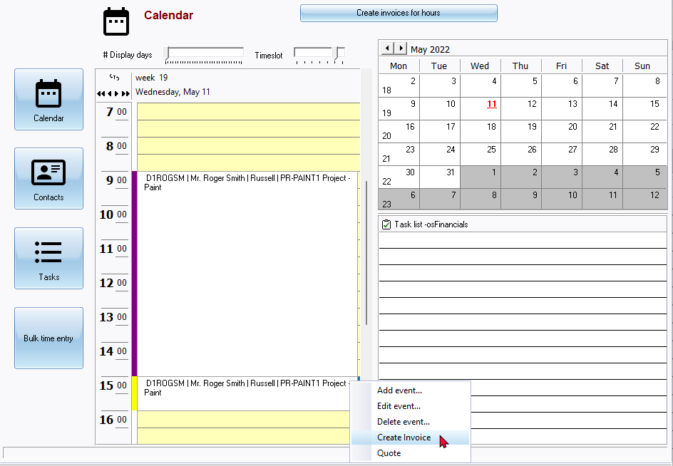
- On the context menu, select the “Create Invoice” option. A new “Invoice” screen for the selected debtor (customer / client) will be displayed.
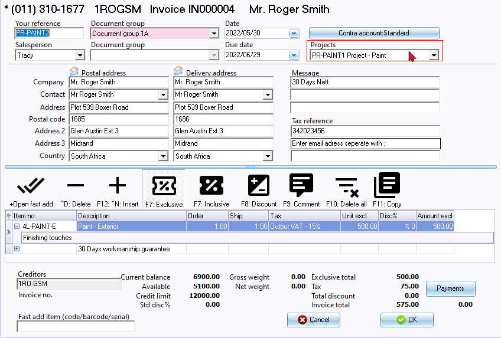
- Select the Project from the list in the “Projects” field.
- Enter a reference in the “Your reference” field.
|
|
The reference number is added to projects and is useful when searching for a specific document or a project. |
- Check and edit the messages in the “Message” field, if necessary.
- Edit the rest of the fields as necessary, if required.
- Select the “Stock item” and check the rest of the fields.
|
|
Additional information may be added to stock items on documents:
|
- Click OK to close and save the Invoice. The Invoice will be added to the Documents tab of the “Project” screen.
Update (Post) Documents to the Ledger
Once the documents for the project is processed, you may update (post) the documents to the ledger.
Once the documents are updated (posted) to the ledger, these documents will be added to the Transactions tab of the project(s).
To post or update your documents:
- On the Default ribbon, select Update ledger (F3). The “Update Invoice” screen will be displayed.
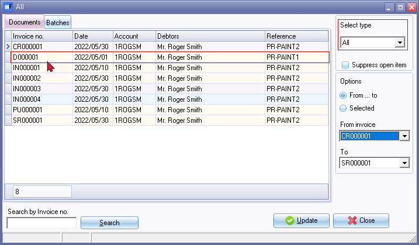
- Select each document type (i.e. “Purchase, Supplier return, Invoice” and “Credit note“).
|
|
DO NOT SELECT the “All” option. If the “All” option is selected, the Project Quote will also be posted (updated) to the ledger. It will incorrectly post (update) transactions as follows: 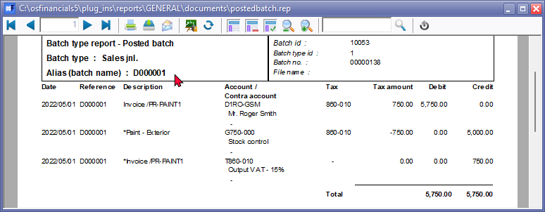 |
|
|
Note document “D000001” is processed in the Project Quote tab of the selected project, and only included in the “All” document types selection on the “Update ledger” screen. |
|
|
SEE - PROJECT QUOTES – KNOWN ISSUES |
- Click on the Update button for each document type (i.e. “Purchase, Supplier return, Invoice” and “Credit note“).
|
|
Note if a document, e.g. “D000001” is processed in the Project Quote tab of the selected project, it is included in the “All” document types selection on the “Update ledger” screen. If you have posted (updated) the ledger using the “All” document types selection on the “Update ledger” screen, these Project Quotes may post incorrect transactions to the ledger. |
BATCH (JOURNAL) PROCESSING FOR PROJECTS
By default, projects are not activated in Batches. Projects needs to be activated for each batch, in which you need to process transactions for specific projects.
Activate Projects in Batches (Journals)
Once you have activated Projects in a specific batch, the “Project” column will be displayed after the “Account” column; and (before the “Tax” column, if the “No tax” option is not selected on the Advanced tab of the “Options for this batch” screen) before the “Debit” column.
When processing transactions, you may select the “Projects” from the “Projects” lookup.
To activate projects in batches:
- On the Default ribbon, select Batch entry.
- Select the specific “Batch type” in which you need to activate Projects.
- Click on the F10: Setup icon to set the Options for the selected batch.
- Click on the Advanced tab.
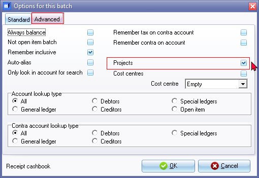
- To activate “Projects”, select (tick) Projects.
- Click on the OK button. The selected batch entry screen will be opened and the “Projects” column will be inserted in the batch.
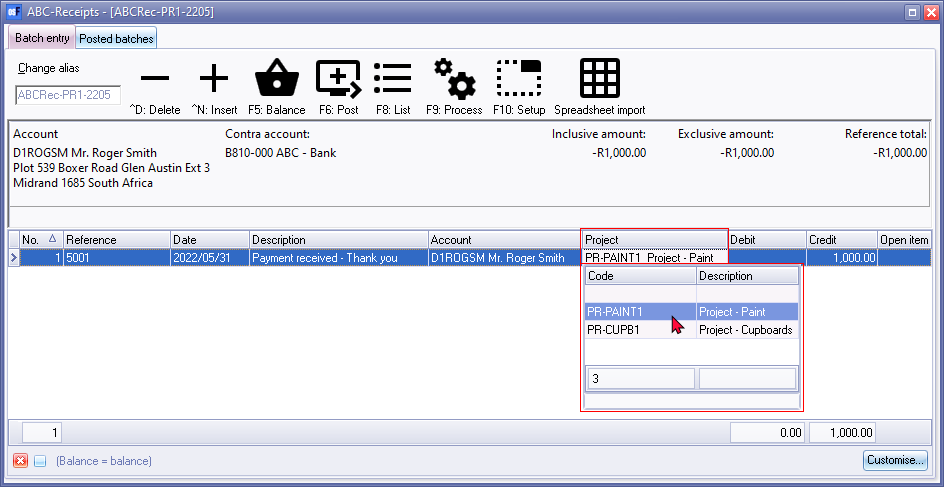
|
|
To deactivate “Projects” in a specific batch, simply repeat this process and remove the tick in the “Projects” tick box. |
Process Transactions for Projects in Batches
When processing transactions, you may select the “Projects” from the “Projects” lookup.
To process transactions in batches:
- Click on Batch entry (Default ribbon).
- Select the specific “Batch type” in which you need to process transactions for Projects.
- Enter the transactions and select the Project from the Project lookup.
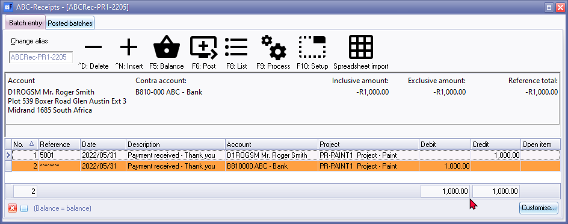
- Balance the batch.
- Click on F8:List to print a list of the unposted transactions in the batch.
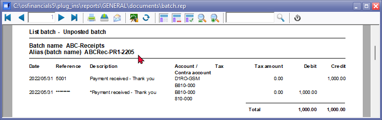
- Click on F6:Post to update the transactions to the ledger.
- Once the batch transactions are updated (posted) to the ledger, these batch transactions will be added to the Transactions tab of the project(s).
Project Reports
There are five (5) reports available for Projects. These reports are created and maintained in “Reportman” accessed in Report designer on the Reports or Setup ribbon.
These reports are stored in the “...\plug_ins\reports\REPORTS\PROJECTS” directory, and is follows:
Label ID Description (Report name)
- TRN_27 Stock Item
- TRN_354 Statement
- TRN_960 Total
- TRN_2330 Hours
- TRN_20069 Transactions
This will translate depending on your Language selection when launchingosFinancials5/TurboCASH5 for the first time (after installation); or the language selected in the Switch language (Start ribbon).
For example; English (default), en-South Africa, en-UK will refer to “Stock items” and if you select the en-American language, it will display as “Inventory items” on the list of reports.
To print reports for projects:
- Click on Projects (Default ribbon). The “Projects” screen (list view) is displayed:
- The “Projects” screen (list view) will be displayed.
- Select a Project.
- Select a report on the list, and click on the Report button.
|
|
The “Stock items” and the “Statements” reports includes documents and/or transactions which are not posted (updated to the ledger). |
If a project is not setup / configured correctly, you may encounter the following error messages, when printing reports:
|
|
Error - No data to print “D:\osfinancials5\plug_ins\reports\REPORTS\documents\..\PROJECTS\TRN_20069.rep has errors No data available to print!” |
|
|
Errors - No project / Project not setup / configured correctly “D:\osfinancials5\plug_ins\reports\REPORTS\documents\..\PROJECTS\TRN_27.rep has errors PROJECT:'''' is not a valid integer value” |
Project - Transactions
This report will list all transactions in posted batches and/or posted documents. These transactions are listed in the selected project's Transactions tab.
|
|
The “Transactions” report does not include documents and/or transactions which are not posted (updated to the ledger). |
Page 1 -
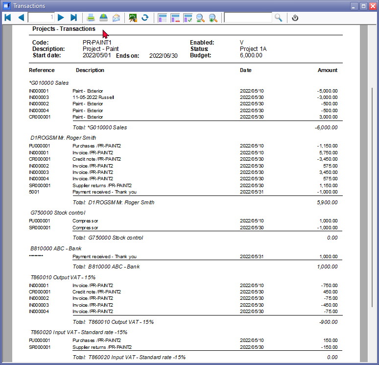
Page 2 -
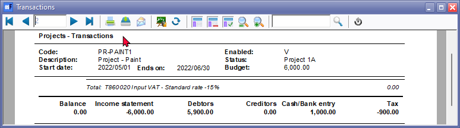
|
|
SEE - PROJECT QUOTES – KNOWN ISSUES |
|
|
Note if a document, e.g. “D000001” is processed in the Project Quote tab of the selected project, it is included in the “All” document types selection on the “Update ledger” screen. If you have posted (updated) the ledger using the “All” document types selection on the “Update ledger” screen, these Project Quotes may post incorrect transactions to the ledger. |
The “Projects - Transactions” report will list the details of each transaction for each account.
Finally, the totals of the accounts are summarised for each account type, as follows:
- Balance - The total of the transactions allocated to balance sheet type accounts.
- Income statement – The total of the transactions for income received and expenses paid allocated to income statement type accounts.
- Debtor - The total of all transactions for debtor (customer / client) accounts.
- Creditor – The total of all transactions for creditor (supplier / vendor) accounts.
- Cash/Bank entry – The total of the receipt transactions minus payment transactions into and out of Bank accounts and Petty cash accounts.
- Tax – The total of the Output TAX (VAT/GST/Sales tax) accounts minus the total of the Input TAX (VAT/GST/Sales tax) accounts.
Project – Hours
This report will list the following documents, which have been processed in the Calendar:
- Hours – Create quotes for a selected debtor (customer / client) account. The quote will be added to the Documents tab of a selected Project. The quotes may be edited and converted to an Invoice.
- Create invoices for scheduled debtor (customer / client) appointments. You may create up to 6 categories of debtor (customer / client) appointments.
The report will list the date, start and end time as well as the number of hours spent on a project.
|
|
The “Hours” report includes documents and/or transactions which are posted (updated to the ledger). |
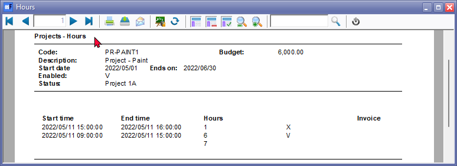
|
|
A similar report may also be printed from the Reports → Calendar menu on the Reports ribbon. 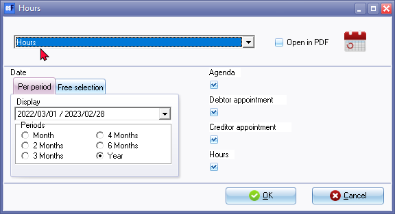 This report will not display the project information. It will display the minutes instead of hours. 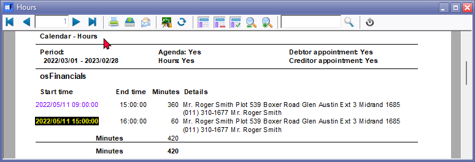
|
Project - Stock items
This will list the details of the stock items and hours (created via the Calendar).
This will list the totals of all Invoices, Credit notes, Purchases and Supplier returns as well as a list of each of these documents. It will also list the Stock code, Document number, Stock description, Date and Exclusive amount for each stock item selected on a document.
|
|
The “Stock items” report includes documents and/or transactions which are posted (updated to the ledger). |
Page 1 -
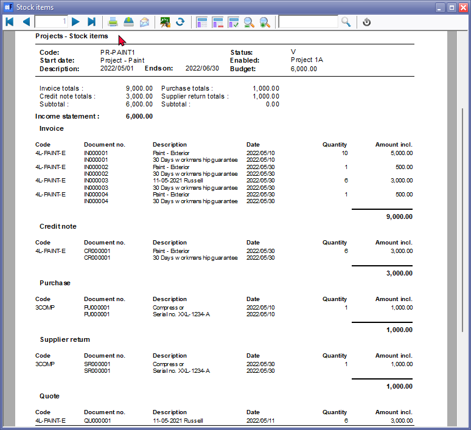
Page 2 -
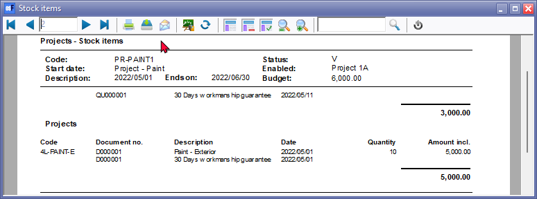
|
|
Projects at the end of this report will list all “Project Quotes” for the selected debtor (customer / client) account, added on the Project Quote tab. |
Project – Statements
This will list the totals of all Invoices, Credit notes, Purchases and Supplier returns as well as a list of each of these documents. It will also list all Quotes and/or Orders.
|
|
The “Statements” report includes documents and/or transactions which are posted (updated to the ledger). |
Page 1 -
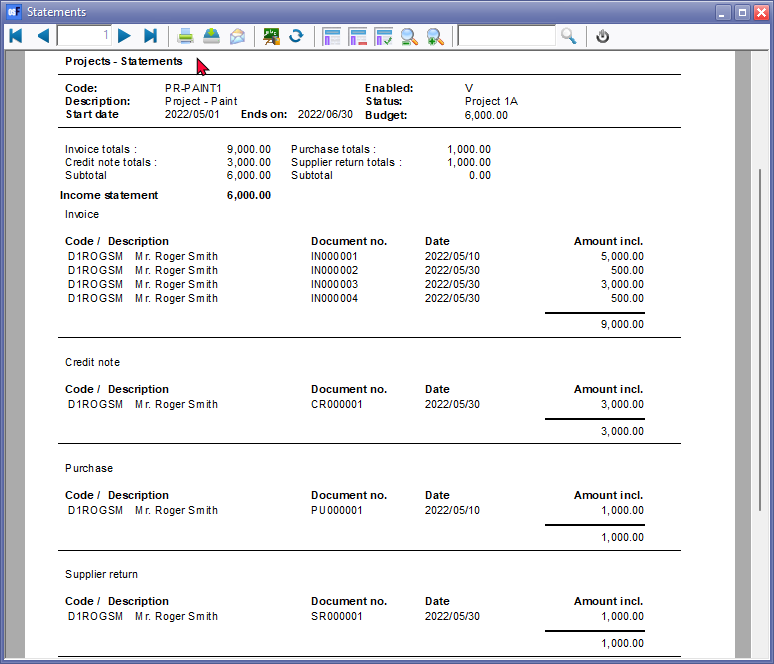
Page 2 -
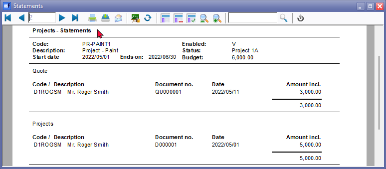
|
|
Projects at the end of this report will list all “Project Quotes” for the selected debtor (customer / client) account, added on the Project Quote tab. |
Project – Totals
This report will list the totals of transactions (debit and credit) for all accounts selected in posted batches and/or posted documents.
|
|
The “Totals” report does not include documents and/or transactions which are not posted (updated to the ledger). |
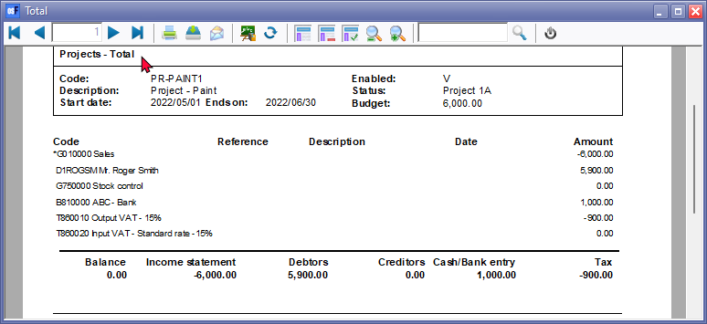
The “Projects - Total” report will list the details of each transaction for each account.
Finally, the totals of the accounts are summarised for each account type, as follows:
- Balance - The total of the transactions allocated to balance sheet type accounts.
- Income statement – The total of the transactions for income received and expenses paid allocated to income statement type accounts.
- Debtor - The total of all transactions for debtor (customer / client) accounts.
- Creditor – The total of all transactions for creditor (supplier / vendor) accounts.
- Cash/Bank entry – The total of the receipt transactions minus payment transactions into and out of Bank accounts and Petty cash accounts.
- Tax – The total of the Output TAX (VAT/GST/Sales tax) accounts minus the total of the Input TAX (VAT/GST/Sales tax) accounts.
PROJECT BUDGET
In addition to the Project budget (estimated project cost) for the Project, entered in the “Budget” field when a selected project is created and/or edited, budget figures may also be added for selected accounts (Accounts on the Setup ribbon).
Add / Edit Budget for selected accounts
To add / edit budget figures for projects:
- Click on Accounts (Setup ribbon).
- Select the Account (or sub-account).
- Click on the Budget tab (if not displayed by default).
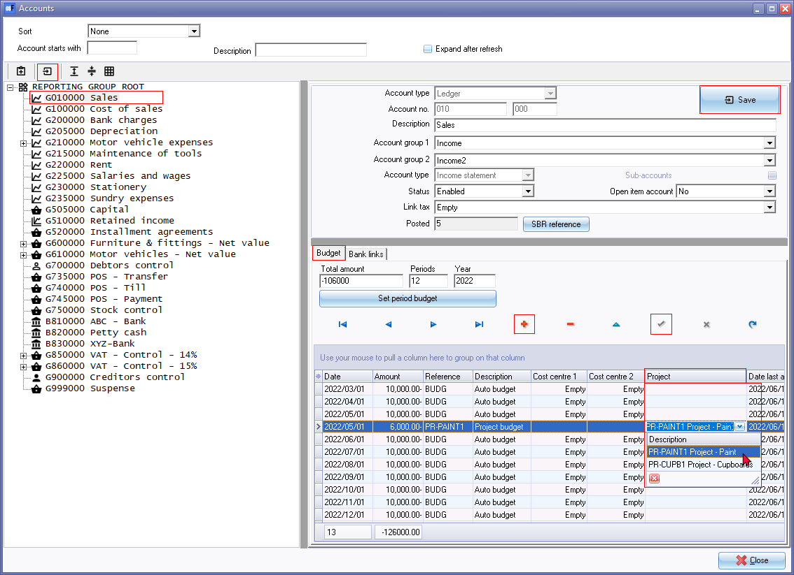
- Select the period and enter or edit the existing budget figure, if necessary.
- Click on the button to create a new record.
- Enter the date and amount.
|
|
Enter a reference and description. This will print on reports. |
- Select the project in the “Project” column.
- Click on the
 button to save the budget record.
button to save the budget record. - Repeat the process for each month.
- Click on the Save (record button).
- Click on the Save button.
- Repeat the process for all accounts for which you need to enter budgets for projects.
Print budget figures in the T-Account viewer
- On the Reports ribbon, select T-Account analyser 1 or T-Account analyser 2.
- Select the Trial balance, Income statement, or Standard column balances report type.
- Select (tick) the Budget option.
- Click on the Report button.
- Select an account, e.g. “Sales”, and right-click. On the context menu, click the “Show details” option.
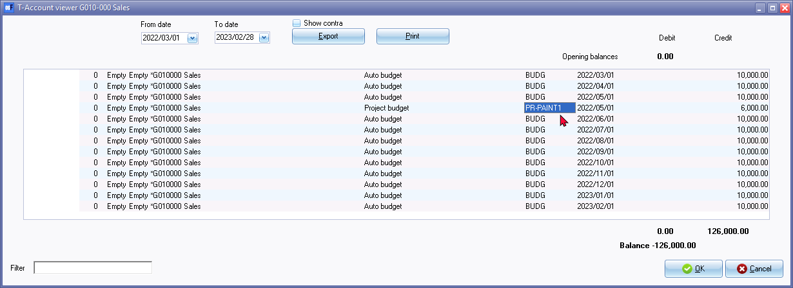
- Click on the Print button.
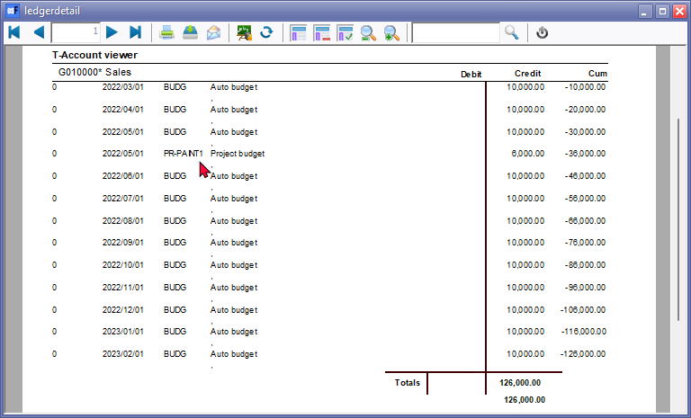
Search / Find / Print Documents and Transactions for Projects
Debtor accounts
Once documents and/or batch transactions are processed, you may view, analyse, and print transactions and/or documents for a selected debtor (customer / client) account.
The tabs on which documents and/or batch transactions (“Appointment, Documents, Transactions” and “Stock items”) are listed, is briefly discussed.
|
|
Similar tabs as for Debtor accounts is also available for Creditor accounts. |
Projects tab
By default, any active projects allocated to a debtor (customer / client) account will be listed.
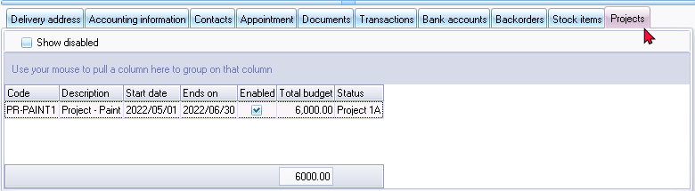
To include inactive (completed) projects, you may select (tick) the “Show disabled” field.
The “Total budget” displays the amount entered on the “Budget” field for a selected project.
Budget figures may also be entered for selected accounts in the Setup → Accounts (Setup ribbon).
The “Status” column displays the name of the Project as set in the ”Projects” option on Setup → Groups (Setup ribbon).
Appointment tab
The following events added in the Calendar (Setup ribbon), for the selected debtor (customer / client) account, is listed on the Appointment tab:
- Hours – Create quotes for a selected debtor (customer / client) account. The quote will be added to the Documents tab of a selected Project. The quotes may be edited and converted to an Invoice.
- Create invoices for scheduled debtor (customer / client) appointments. You may create up to 6 categories of debtor (customer / client) appointments.
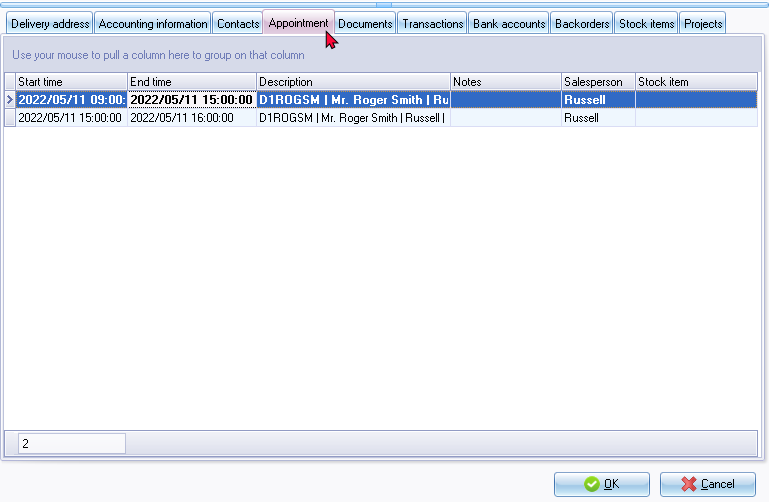
|
|
The project code and description will be displayed after the salesperson, e.g. ”Russell”. |
|
|
This detail will be included the Hours report, printed in Projects (Default ribbon) and Reports → Calendar (Reports ribbon). |
Documents tab
All documents processed for the selected debtor (customer / client) account will be listed. This includes quotes and orders as well as unposted documents.
|
|
SEE - PROJECT QUOTES – KNOWN ISSUES |
|
|
The quote (“D000001”), which was created (processed) in the Project Quote tab (Projects on the Default ribbon), will also be listed. The “Project Quote” is linked to the “Layout file point-of-sale” on Documents setup (Setup ribbon). You may select a Quote layout file to print “Project Quote” in the correct layout file. |
|
|
Note if a document, e.g. “D000001” is processed in the Project Quote tab of the selected project, it is included in the “All” document types selection on the “Update ledger” screen. The “Show transactions” context menu should not list any transactions on the “Transactions” screen. If you have posted (updated) the ledger using the “All” document types selection on the “Update ledger” screen, these Project Quotes may post incorrect transactions to the ledger. |
Print documents
You may click on the Print (button or double-click) on a selected document to print the document.
Documents will be printed in the default global layout file as set in Documents setup (Setup ribbon), unless it is set on the Delivery address tab of the debtor (customer / client) account (Debtor on the Default ribbon).
You may select a different layout file, if necessary.
Show transactions context menu
Select a posted document on the list, and right-click. The “Show transactions” on the context menu, will list the “Transactions” screen (e.g. Invoice “IN000001”)
|
|
If a quote or an order as well as a unposted document, is selected, the “Transactions” screen will be blank. |
Click on the Print button to view a list of transactions in the “Batch type report – Posted batch”.
Transactions tab
All transactions which have been processed (posted documents and posted batches) for the selected debtor (customer / client) account will be listed.
It will list transactions as follows:
- Debit - Documents (i.e. Invoices and POS Invoices), Sales journal, Generate multiple transactions (Interest on overdue debtors, Debtors with charge amount, Fixed amount to all debtors), Opening Balances take-on, etc. It will list any transactions, for which amounts are entered in the “Debit” column of batches.
- Credit - Documents (i.e. Credit notes), Sales returns journal, Receipts journal, Generate multiple transactions (Balance debtors with amount), etc. It will list any transactions, for which amounts are entered in the “Credit” column of batches.
|
|
See - Open item processing : By default, the "All" option (tick box) is not selected. If any payment received and credit note transactions were fully linked to invoices, etc. those transactions will not be listed. Only those transactions with outstanding amounts will be listed. |
|
|
SEE - PROJECT QUOTES – KNOWN ISSUES |
|
|
Note if a document, e.g. “D000001” is processed in the Project Quote tab of the selected project, it is included in the “All” document types selection on the “Update ledger” screen. If you have posted (updated) the ledger using the “All” document types selection on the “Update ledger” screen, these Project Quotes may post incorrect transactions to the ledger. |
Show transactions button
Click on the “Show transactions” button.
You may enter or select a start date and an end date, if necessary.
|
|
You may click on the Print button to print the transactions in the T-Account viewer. The Batch number is automatically generated (e.g. 10054 for the IN00001 transactions), when transactions in batches and documents is posted (updated) to the ledger. You may select the "Show contra" option on the T-account viewer to view the transactions to contra accounts. These contra accounts will not be printed in the T-account viewer report, but will be included when you export (Export button) these transactions to a spreadsheet. |
Click on the Print button to print the transactions.
Show transactions context menu
Select a document or a batch transaction on the list (“Debit” or “Credit” section) and right-click. The “Show transactions” on the context menu, will list the “Transactions” screen (e.g. Invoice “IN000001”)
Click on the Print button to view a list of transactions in the “Batch type report – Posted batch”.
Stock items tab
This tab will list all the posted as well as unposted sales documents (i.e. invoices, credit notes and quotes) and purchase documents (i.e. purchases, supplier returns and orders) for the selected debtor (customer / client) account.
|
|
The quote (“D000001”), which was created (processed) in the Project Quote tab (Projects on the Default ribbon), will also be listed. |
Stock items – Document groups tab
Once documents and/or batch transactions are processed, you may view, analyse, and print documents for a selected stock item.
This tab will list all the posted as well as unposted sales documents (i.e. invoices, credit notes and quotes) and purchase documents (i.e. purchases, supplier returns and orders) for a selected stock item.
|
|
The quote (“D000001”), which was created (processed) in the Project Quote tab (Projects on the Default ribbon), will also be listed. |
You may double-click on a selected document, to print the document.
|
|
If the document is printed in the incorrect layout file, for example, a credit note is printed in the invoice layout file, open the selected document from the list. When the document is closed it will print in the correct layout file for the document type. |
Open a posted document
Right-click on a selected document, and on the context menu, select the “Open document” option. The selected document entry screen will be displayed.
|
|
In the posted document entry screen, the OK button and the processing icons is not displayed. |
Open an unposted document
Search - Investigator
The Investigator allows you to search for data in an open Set of Books. To search or locate data, you may enter a valid word or phrase to search for an item. This feature also allows you to define, or refine, or filter the search criteria, and select to view the details for a selected search result.
|
|
SERIAL TRACKING - If you have entered a serial number of a product (stock item) as a comment on your sales documents (Invoices, Credit notes and/or Quotes) and/or on purchase documents (Purchases, Supplier returns and/or Orders), you may enter the serial number in the “Search For:” field. If you click on the Search now button, the Documents will be listed. You may then double-click on the selected document to preview the document. |
|
|
Comments entered in document lines are searchable. Remarks is not searchable, but prints on invoices and other documents. |
To search for data using the Investigator:
- On the Default ribbon, select Search.
- Enter a word or phrase to search for specific data. To filter the data, you may also select to include everything or documents, batches, stock information, account names and/or account information.
- Click on the Search now button or on the F3:Search icon. The number of items found (which matches the search criteria) will be displayed, and each of the items found will be listed.
- Select an item type from the search results list and right-click - select "Show detail" option on the context menu (or double-click) to launch the options. The types is as follows:
- Account - Launch the “T-Account viewer” - You may enter the dates from and dates to, as well as any filters (if necessary) to view and filter the transactions. Transactions may be printed and exported to a spreadsheet file.
- Debtor / Creditor - Launch the “Debtor” accounts screen to edit or check specific details for the debtor (customer / client). If a “Creditor” is indicated, it will launch the specific creditor (supplier / vendor) account.
- Stock - Launch the “Stock item” screen to edit or check specific details for the stock item.
- Document - The selected document will be printed.
|
|
The quote (“D000001”), which was created (processed) in the Project Quote tab (Projects on the Default ribbon), will also be listed. The “Project Quote” is linked to the “Layout file point-of-sale” on Documents setup (Setup ribbon). You may select a Quote layout file to print “Project Quote” in the correct layout file. |
- Batch - Launch the “T-Account viewer” - You may enter the dates from and dates to, as well as any filters (if necessary) to view and filter the transactions. Transactions may be printed and exported to a spreadsheet file.
|
|
For certain types (e.g. “Account”), the F4:Details icon will be available. If you click on this icon, the balances for general ledger accounts will be displayed. |
- To close or exit this screen, click on the Close button on the title bar.
Further “Search” options are available to select from. If you click on the More >> link, the “Advanced” options will be available in which the limit for the number of records found may be set.
To refine or filter the search criteria, you may click on the Refine search link.
Remove / Add Project Transactions
Remove Transactions from a Project
The Transactions tab lists all posted (updated) transactions to the ledger.
In this example, Invoice IN000004, needs to be deleted from the project.
To delete a transaction from the project:
- Select the transaction, in the “Debit” section.
|
|
You may use the Ctrl button and a mouse-click to select more than 1 transaction to remove from the project. |
- Right-click. On the context menu, select the Delete from project option.
- A confirmation message is displayed:
“Do you wish to continue?”
- Click on the Yes button. The transaction will be removed from the project.
- In the “Credit” section, select the Contra-accounts and repeat the process for the contra-accounts.
This will remove the transactions and the contra-accounts' transactions from the following reports:
- Transactions
- Totals
The deleted documents will not be removed, and still be included in the following reports:
- Stock items
- Statements
Add Removed Transactions to a Project
Right-click and select the Add to project option on the context menu.
The “T-account viewer” screen will be displayed. It will list the transactions which was removed from the project.
Select the transaction(s).
|
|
You may use the Ctrl button and a mouse-click to select more than 1 transaction to add to the project. |
DELETE PROJECTS
You may delete a project. This will not have any effect on the transactions and/or documents, for the Set of Books.
|
|
Deleting Projects from your Set of Books cannot be undone. You need to make absolutely sure that the correct Project is selected. |
Delete a Project
To delete a Project:
- Click on Projects (Default ribbon). The “Projects” screen (list view) is displayed:
- Select the project and click on the Delete button. A confirmation message is displayed:
“There is document(s) associated with this project! Do you wish to continue ? All project data will be lost!”
- Click on the Yes button.
- Another confirmation message is displayed:
“There is transaction(s) associated with this project! Do you wish to continue ? All project data will be lost!”
- Click on the Yes button.
- A final confirmation message is displayed:
“Do you wish to continue?”
- If you are absolutely sure, click on the Yes button.
Delete Project Quotes
Once a project is deleted, there may be some Project Quotes which is not deleted.
|
|
SEE - PROJECT QUOTES – KNOWN ISSUES |
To delete the “Project Quote” documents:
- On the Default ribbon, select Edit → Delete.
- Select Documents.
- Select the document type “All”.
- Click the Delete button. A confirmation message,is displayed:
“Do you want to delete?”
- Click on the Yes button.
Project Quotes – Known Issues
Print documents in the POS Layout file
The “Project Quote” is linked to the “Layout file point-of-sale” on Documents setup (Setup ribbon).

Printing the "Project Quote" will print by default to the "POS-STARTSP100" layout file.
Delete / Remove Transactions Incorrectly Updated in Project Quotes
|
|
The “Project Quote - D000001” on the Project Quote tab is posted as an invoice when selecting the “All” option on the Update ledger (Default ribbon). It is not listed in the Documents – Invoicing (or any other document types, i.e. Quote, Credit note, Purchase or Supplier return): |
Identify the posted transactions incorrectly affecting the Set of Books
|
|
SEE - Update (Post) Documents to the Ledger |
The “Project Quote - D000001” on the Project Quote tab is included in the “All” option, when documents were posted (updated) to the ledger.
The “Project Quote - D000001” on the Project Quote tab is not included in the “Invoice,” (or other document types, i.e. “Credit note”, “Purchase” or “Supplier return”) option, when documents were posted (updated) to the ledger.
The “Project Quote - D000001” on the Project Quote tab is posted as an invoice when selecting the “All” option on the Update ledger (Default ribbon).
|
|
The transactions can be viewed and printed in the “Sales jnl.” batch on the “Batch entry” screen – Posted batches tab. The “Sales jnl.” is linked to the Invoice document type (Documents setup (Setup ribbon). |
To view and print the transactions for the project quote in the sales journal (batch):
- Click on Batch entry (Default ribbon).
- Select the specific “Sales jnl.”
- Click on the Posted batches tab. All the posted batches will be listed.
- Identify and select the batch (e.g. “10059” - “Alias batch name” (Document number “D000001”).
- Double-click on the selected batch. The Details tab will list all the transactions posted (updated) to the ledger.
- Click on the Print button.
Fix the incorrect posted transactions for the Set of Books
The transactions for the Project Quote, affect the global balances in the Set of Books. These transactions need to be cancelled.
To cancel / reverse the incorrect posted transactions:
- On the Setup ribbon, select Tools → Global processes → Reverse posted batch/document.
- On the “Reverse posted batch/document” screen, click on the Documents tab.
- Select the incorrect transaction, i.e. “Project Quote – D000001”; and double-click on the selected document. The “Details” tab will list all the posted transactions.
- Click on the Print button.
- Click on the Reverse posted document button.
|
|
A Warning message is displayed: “This will radically alter your data! We recommend that you stop and make a backup!” Before you click on the Yes button, you need to make absolutely sure that the correct transactions is selected. |
- Once ready, click Yes. The document will be removed, but not deleted.
- Close the "Reverse posted batch/document" screen.
The document is not available to edit, as is the case with all other documents.
It is available for reposting.
Delete the Project Quote document
To totally remove the “Project Quote” document, you need to delete the document.
To totally delete the “Project Quote” document:
- On the Default ribbon, select Edit → Delete.
- Select Documents.
- Select the document type “All”.
- Click the Delete button. A confirmation message, is displayed:
“Do you want to delete?”
- Click on the Yes button.